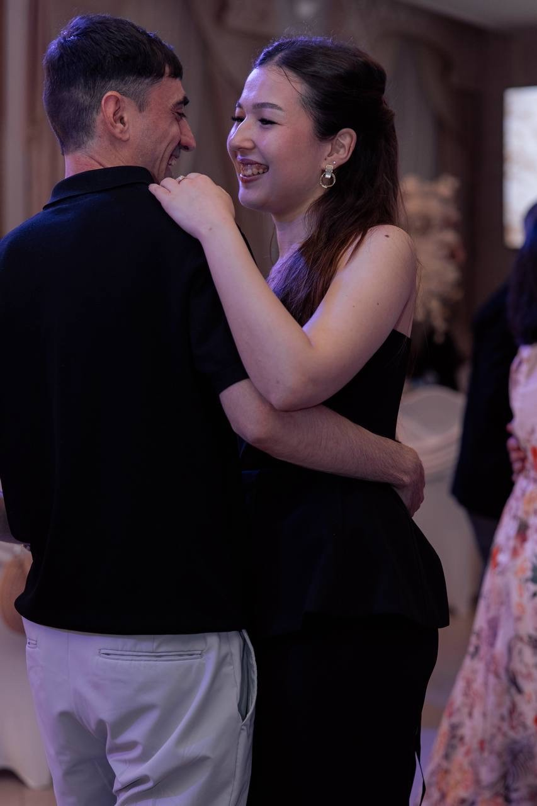

Однажды в парке
Обычная прогулка, случайный взгляд и первое «привет». Мы ещё не знали, что однажды будем вспоминать этот день с такой улыбкой.
Приглашение на нашу свадьбу
Среди тысяч встреч
мы нашли друг друга.
И хотим разделить это счастье с вами.
До нашего никяха осталось
Симферополь · время событий UTC+3
01 / Немного о нас
Иногда одна случайная встреча становится самым важным событием в жизни.

Обычная прогулка, случайный взгляд и первое «привет». Мы ещё не знали, что однажды будем вспоминать этот день с такой улыбкой.
Потом были долгие разговоры, прогулки и желание не прощаться. Простые дни стали особенными, потому что мы были рядом.
Теперь начинается новая глава — наша семья. И нам очень хочется, чтобы в её начале были вы.
Счастье — когда дорога домой
ведёт к одному человеку.
Ильяс & Султание
02 / Сохраните эти даты
Будем счастливы видеть вас на никяхе и на нашей свадьбе.
Начало в 12:00 · 2026
Тихий, светлый день,
с которого начнётся наша семья.
Начало в 18:00 · 2026
Тёплые встречи, объятия
и вечер, который запомним вместе.
03 / Наши моменты
Нажмите на фотографию, чтобы рассмотреть поближе.
04 / Давайте поиграем
Пять маленьких вопросов.
Все ответы спрятаны в приглашении.
05 / Очень ждём вас
Пожалуйста, заполните небольшую анкету.
Так нам будет проще подготовить праздник для каждого из вас.
Ваш ответ и пожелания увидят только молодожёны.
06 / Слова, которые останутся
Мы сохраним ваши тёплые слова, чтобы возвращаться к ним спустя годы.
Здесь скоро появятся ваши пожелания. Пусть первое будет от вас ♡
07 / Вашими глазами
Улыбки, объятия, случайные кадры.
Добавляйте фотографии в наш общий альбом.
Загружайте фотографии, которыми согласны поделиться с гостями. Снимки появятся после подтверждения.
08 / Маленькие детали
Да, будем рады видеть вас и 5 ноября на никяхе, и 14 ноября на свадьбе. Выберите оба события в анкете.
Выбирайте наряд, в котором вам будет красиво и комфортно. Самое главное — ваше присутствие и хорошее настроение.
Палитра приглашения для вдохновения, без обязательных требований.
Укажите детей в общем количестве гостей и напишите об этом в анкете, чтобы мы могли учесть ваш состав.
Ваше присутствие — уже радость для нас. Если хочется уточнить пожелания к подаркам, свяжитесь с нами лично.
В карточках событий есть точные адреса и маршруты. Возможность парковки рядом с площадками лучше уточнить перед поездкой.
Анкету увидят только молодожёны. Пожелания и фотографии станут доступны гостям после подтверждения в панели молодожёнов.